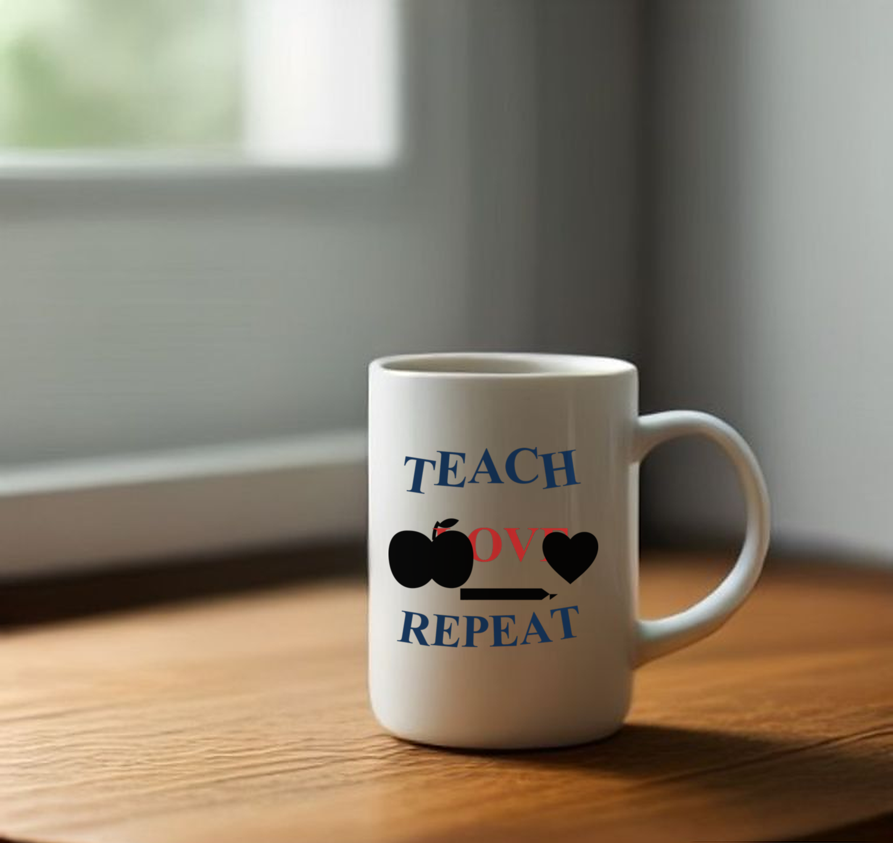

15 Personalized Cricut Teacher Gifts Under $5 (Batch Method)

Fifteen Gifts, One Evening, None Over $5
It's the last week of school. The party is Friday, you volunteered to make 'a little something' for the teacher, and room-parent duty quietly expanded it to the whole staff. Store-bought personalized gifts cost more than the gift card you'd tuck inside one, so you closed the tab. The fix is cheap: a Cricut, a stack of dollar-store blanks, and a batch workflow. One Design Space session, one weeding assembly line, fifteen finished gifts — every one under $5.
The Batch Method: Cut Every Name in One Session
Personalized gifting dies in setup, not in crafting. Cut one name, unload the mat, reopen the project, cut the next — and a 25-gift plan becomes a lost weekend. Batch it instead:
Load the roster once
Paste the class list into a single text box, one name per line, all caps. Pick one font, size it once, then duplicate the column for every gift type you're making. Fix a typo once and it's fixed everywhere.
Sort mats by material, not by gift
Keep every iron-on name on one mat and every adhesive-vinyl name on another. Attach each column so the layout locks; a 12x24 mat takes a full class list in two cuts. Pull the fonts and school shapes you need from the free SVG library so you're not buying a file per project.
Weed assembly-line style
Weed the entire sheet before separating anything. Peel the negative space while the mat is flat, sort each student's pieces into a labeled pile, move to the next name. Nothing gets lost, nothing gets pressed twice.
Press in runs
Set temperature and pressure once per material and finish every blank of that type before switching. Fabric blanks first — they press fastest — adhesive projects last while the iron cools.
15 Personalized Cricut Teacher Gifts Under $5
Each idea lists the blank, material, estimated cost, and time. Mix and match: a tote for the main teacher, a mug-plus-sign combo for the aides. Most of the cut files are in the teacher SVG shop, the rest free in the free SVG library.
1. Name tote bag (~$3, 15 min)
Blank: plain canvas tote. Material: everyday iron-on HTV, cut mirrored. Name across the top or stacked left-aligned, 30-second press, warm peel. The classic for a reason.
2. Glitter tumbler (~$4, 25 min)
Blank: dollar-store tumbler. Material: permanent adhesive vinyl. Name plus one layered accent shape. Add a hand-wash card so it survives the year.
3. Desk name sign (~$2, 20 min)
Blank: small craft-aisle wood rectangle. Material: iron-on HTV on painted wood — no mirror, the adhesive side presses onto the paint. Looks store-bought, costs pocket change.
4. Pencil holder (~$2, 20 min)
Blank: unfinished wood cup or plain pencil cup. Material: iron-on HTV on painted wood. Paint, dry, press, done. Fill it with nice pencils and the perceived value clears $5 easily.
5. Class bookmark set (under $1 each, 30 min for the stack)
Blank: cardstock. Material: none beyond cardstock — cut each student's name in a script font, or add a thin permanent-vinyl accent. Laminate strips make them last the whole school year.
6. Lounge shirt (~$5, 25 min)
Blank: basic tee on sale. Material: everyday iron-on, mirrored. 'Teacher fuel' on the front, name on the sleeve. One color keeps you at the cap.
7. Hidden-message mug (~$2, 15 min)
Blank: dollar-store mug. Material: permanent adhesive vinyl. Put the joke where only they'll find it — 'thanks a latte' on the bottom or under the handle. The reveal is the gift.
8. Badge reel topper (~$2, 10 min)
Blank: retractable badge reel. Material: permanent adhesive vinyl circle with a name or 'Mrs.' monogram. Fastest gift here — batch a set for the whole staff off one mat.
9. Classroom door sign (~$4, 30 min)
Blank: round wood blank plus ribbon. Material: iron-on HTV on painted wood. 'Mrs. Cole's Class' centered, ribbon loop on top. The one they hang for years.
10. Shaped gift-card holder (under $1, 15 min)
Blank: cardstock. Material: permanent adhesive vinyl for the name. Cut an apple or coffee-cup shaped pocket, slide the card in, write a line on the back.
11. Personalized clipboard (~$3, 20 min)
Blank: dollar-store hardboard clipboard. Material: permanent adhesive vinyl — hardboard behaves like raw wood. Name down the clip or a monogram in the corner.
12. Faux leather key fob (~$2, 15 min)
Blank: faux leather sheet plus key ring hardware. Material: iron-on HTV, mirrored, low heat. Monogram, fold, attach the ring. Reads handmade-expensive.
13. Acrylic sticky-note holder (~$2, 15 min)
Blank: acrylic desk pad or sticky-note holder. Material: permanent adhesive vinyl monogram. It sits on their desk all year, which is exactly the point.
14. Car coaster set (~$2, 20 min)
Blank: two neoprene coasters. Material: iron-on HTV, mirrored. Initials or a tiny apple. Weirdly personal for a two-dollar blank.
15. Canvas pencil pouch (~$3, 20 min)
Blank: zip canvas pouch. Material: everyday iron-on, mirrored. Name plus 'mostly pencils' underneath — the add-on that makes the tote feel like a set.
Material Cheat Sheet: Match the Vinyl to the Surface
Most gift fails are material fails. Iron-on on glass peels by Friday; adhesive vinyl on a t-shirt cracks in the wash. Keep this next to the machine:
| Surface | Material | Key setting |
|---|---|---|
| Canvas / fabric (totes, tees, pouches, neoprene) | Iron-on HTV, cut mirrored | Standard iron-on, 30s press |
| Painted wood (signs, holders, blocks) | Iron-on HTV, no mirror | Standard iron-on, firm press |
| Glass, metal, glazed ceramic, raw wood | Permanent adhesive vinyl, no mirror | Standard vinyl cut |
One exception worth memorizing: raw wood takes adhesive vinyl, painted wood takes iron-on. The paint gives HTV something to grip; bare grain doesn't.
FAQ
Will these survive the dishwasher?
Adhesive vinyl on mugs, tumblers, and acrylic is hand-wash only — say so on a small tag and the gift lasts for years. Iron-on on fabric is machine-washable inside-out, low heat.
What if I spell a name wrong?
Work from the official class roster, not memory or a group chat. Copy-paste names into Design Space instead of retyping, and proof the cut preview before you hit Make It.
What's the cheapest gift that still looks expensive?
The hidden-message mug and the desk name sign, both under $2. A second vinyl color or ribbon on the door sign pushes perceived value far past cost.
Can I sell these at the school fair?
Finished handmade items are generally fine — that's what crafting machine angel policies allow. Don't sell the digital files themselves, don't brand the items as Cricut products, and if a design or font is licensed, check its commercial-use terms first.
How many can I batch at once?
A full class list fits in one Design Space session across two mats — one iron-on, one adhesive. Outfitting the whole staff? Run one session per gift type and reuse the same name list all week.
Need the cut files?
Grab teacher-ready designs in the SVG shop, or start free with the free SVG library — names, monograms, and school icons ready to cut tonight.
🛒 Recommended Cricut Materials for This Project
- Permanent Adhesive Vinyl (Mugs, Signs, Tumblers): Oracal 651 Glossy & Matte Permanent Vinyl Multipack
- Heat Transfer Vinyl (T-Shirts & Tote Bags): Siser EasyWeed HTV Roll (Warm Peel, CPSIA Certified)
- Transfer Tape & Tools: HTVRONT Medium-Tack Clear Transfer Tape + XL Scraper
- Heavyweight Cardstock (Toppers & Keepsakes): 100lb Smooth Core Cardstock Variety Pack
Grab the Free 8-Design SVG Starter Pack + Cut Settings PDF
Want cut-ready files to practice this tutorial? Enter your email to unlock the Starter Pack ZIP immediately.
⬇️ Download Free Starter Pack (.ZIP)